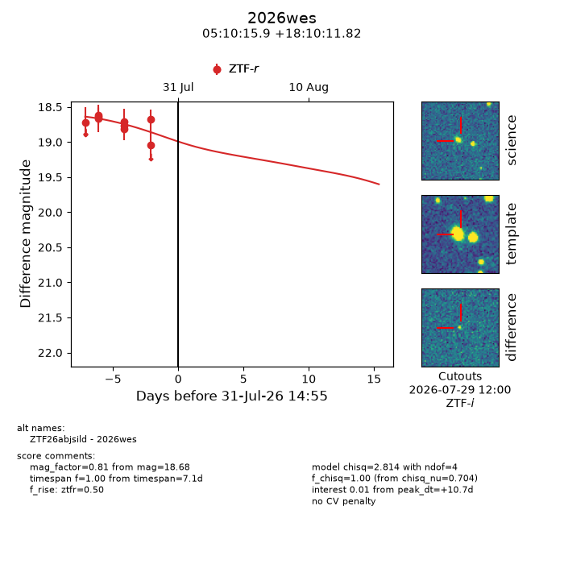
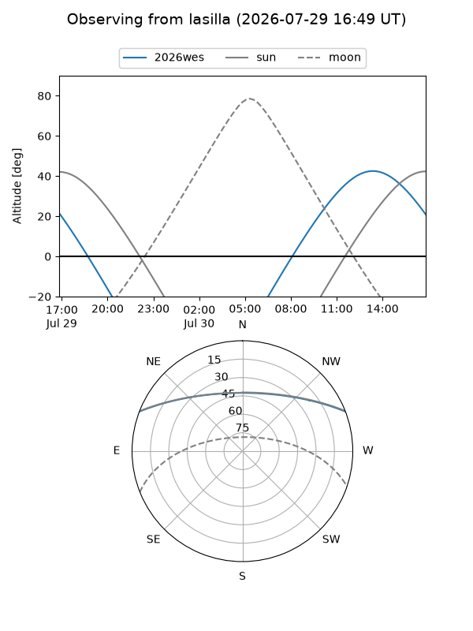
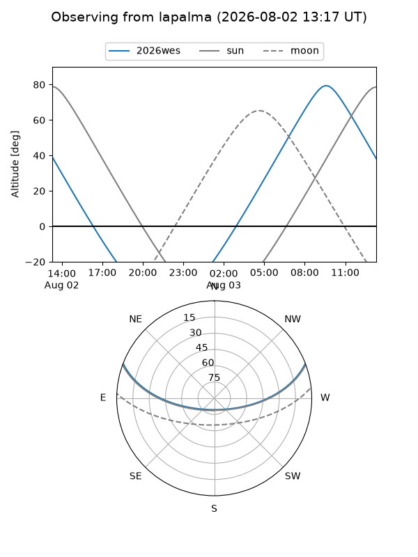
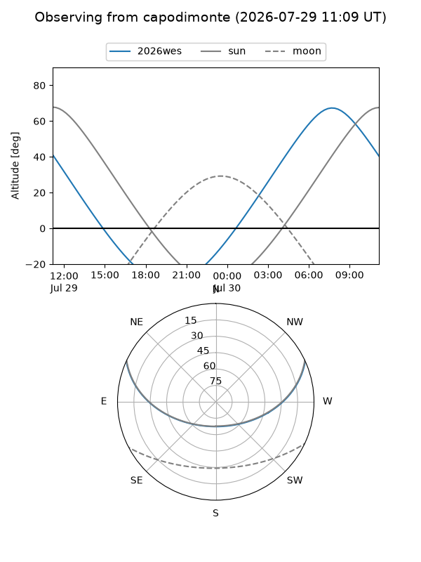
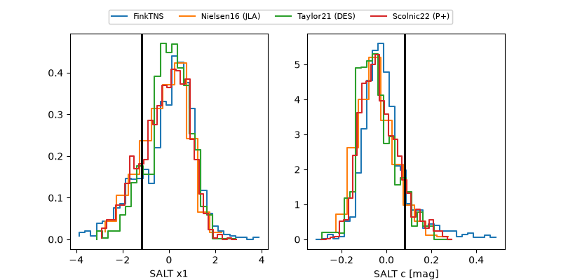

2026wes
Target 2026wes at 2026-07-31 14:58
Aliases and brokers:
FINK-ZTF: ztf.fink-portal.org/ZTF26abjsild
Lasair-ZTF: lasair-ztf.lsst.ac.uk/objects/ZTF26abjsild
ALeRCE-ZTF: alerce.online/object/ZTF26abjsild
YSE-PZ: ziggy.ucolick.org/yse/transient_detail/2026wes
TNS name: wis-tns.org/object/2026wes
Direct TNS query: direct search
alt names
ZTF26abjsild (ztf,fink_ztf)
2026wes (tns,yse)
Coordinates:
equatorial (ra, dec) = 77.5662,+18.16995
equatorial (HMS+DMS) = 05:10:15.89,+18:10:11.82
galactic (l, b) = (184.6275,-12.65591)
Flags:
TNS type: nan
peak dt: +10.7
Photometry:
last ztfr=18.68
9 ztfr detections
Lightcurve

Visibility



Additional plots
